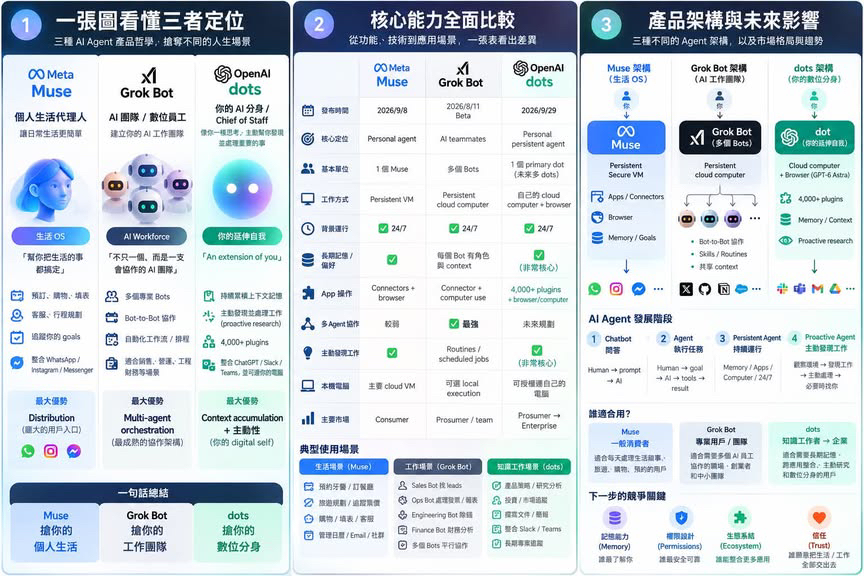

Threads｜Grok Bot 能取代 Muse 嗎？長時程 Agent 工作流主張的查核邊界

一句話摘要
真正值得比較的不是「哪個 Agent 比較強」，而是它能否在你的工作環境穩定完成可驗證的長任務、留下可稽核紀錄，並在權限與成本失控前停下來。這篇貼文對 Grok Bot 的描述具有參考價值，但尚不足以當成正式規格或採購依據。
Threads 貼文的主張
作者提出，某位擁有逾 45 萬追蹤者的 AI 使用者 Alex Finn 選擇 Grok Bot 而非 Muse，關鍵在於「Grok 4.7」能在 Agent 框架中長期自主工作。貼文進一步稱：
- 模型能主動處理任務、與其他代理協作，並可連續工作數日。
- Alex Finn 將 Grok Bot 作為日常主力；升級到 Grok 4.7 後，自主執行準確度與程式碼品質有明顯提升。
- 使用者提供的比較圖則把 Grok Bot 描述為多 Bot 的 AI workforce，包含分工、協作、排程與共享 context 等能力。
這是作者與圖表的敘事，不等於 xAI 已對每一項能力做出公開、普遍可用的產品承諾。
可確認與未確認，要分開看
Meta 的 Muse 公開資料可確認其個人 Agent 定位、持久隔離的 Secure VM、瀏覽器與權限控制設計。相對地，本次嘗試查閱 xAI 公開新聞頁時受 Cloudflare 存取限制，未能取得能獨立確認下列項目的官方一手資料：
- Grok 4.7 的正式發布資訊、模型能力範圍與可用帳號／地區。
- 「Grok Bot」是否為正式產品名稱，以及多 Bot orchestration、持續數日執行、共享 context 的實際限制。
- Alex Finn 的追蹤者數、引用內容與工作流結果。
- 比較圖內的發表日期、App／connector 清單、商業定位與技術架構。
- 圖中稱為「OpenAI dots」的產品、GPT-6 Astra 與 4,000+ plugins 等說法。
因此，本文不將它們表述成已證實功能；有興趣時應回到產品官方帳號、文件、定價頁與實際帳號操作驗證。
長時程 Agent 的評估清單
- 從一個可回復的小任務開始，例如彙整公開資料、建立草稿或跑受限測試；不要直接給它 production、付款或主信箱。
- 設定任務範圍、可讀寫資料夾、允許工具、最大執行時間、預算／token 上限與停止條件。
- 要求每個子任務保留輸入來源、指令、輸出、版本與失敗原因；「連跑幾天」沒有稽核軌跡，不等於可靠。
- 對多 Agent 協作，明確指定誰負責研究、執行、審核與最後提交；避免所有 Bot 擁有相同高權限。
- 用實際成功率、人工回修時間、成本與安全事件比較，而非用模型名稱或 comparison chart 做選擇。
延伸脈絡
使用者提供的比較圖清楚呈現三種市場想像：Muse 作為個人生活代理、Grok Bot 作為工作團隊、dots 作為數位分身。這是有啟發性的定位圖，但其中 Grok 與 dots 的多項具體規格尚未取得一手佐證；圖像已保存為原始脈絡，不替其背書。
原始與查核連結
- Threads 原貼文：https://www.threads.com/@deepai.lab/post/Dd_Olm7k3m9
- xAI News：https://x.ai/news
- Muse 官方首頁：https://muse.ai
- 延伸閱讀：[Muse、Grok Bots 與 OpenAI dots 的 Agent 比較](/articles/2026-10-02-threads-toppyhuang-muse-grok-dots-agent-comparison.html)